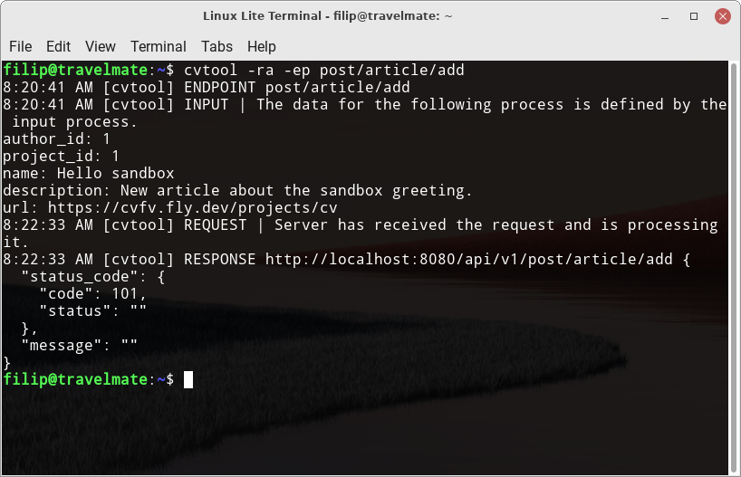
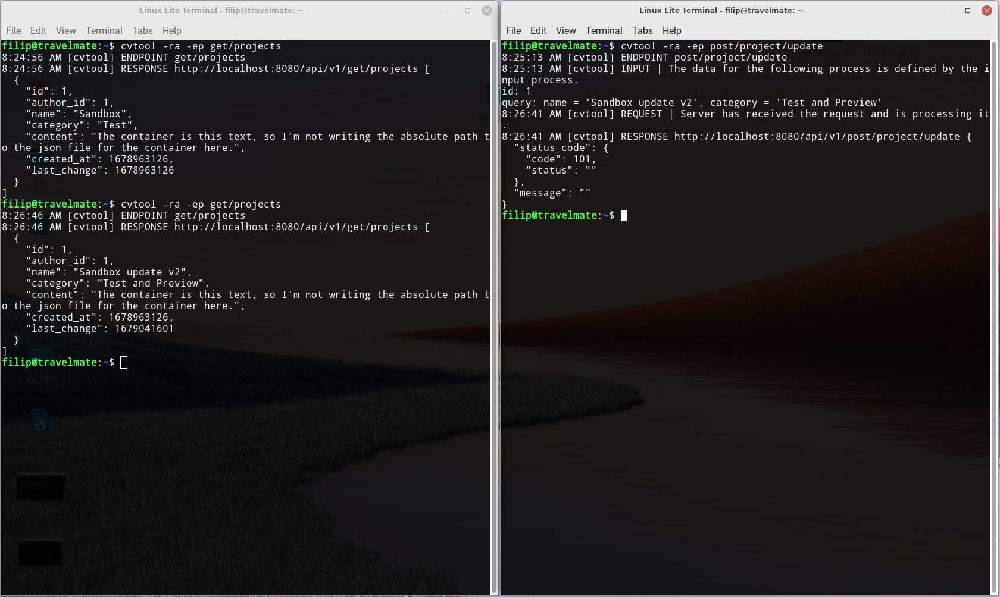

CVTool is a tool that has been specially developed to work with CV project. Its main function is to communicate with the CV site using the Rest API, which provides many endpoints that can be accessed using GET and POST methods.
But CVTool also offers other useful features for developers. For example, it allows you to generate a security token that is needed when implementing a CV project. It also allows you to easily download all the necessary information from the database, such as articles and projects, and export them to JSON format for CV site backup. These exported JSON files can be sent back to the CV site or used to create a custom content file for the endpoint and upload it.
You must have Ruby installed to install CVTool. The tool can be installed using the Ruby ecosystem gem.
Just use the following command:
gem install cv-tool
This command will automatically install the latest version of CVTool on your system and ensure it is set up correctly for use.
The app offers the following features, that you can run with the appropriate arguments:
-h, --help
Show help
-v, --version
Show version
-dp, --deactive-print
Disables the printing process.
-ra, --rest-api
Rest API for get and post operations (additional setting options).
Defining an endpoint to use in order to access a specific function.
A list of endpoints is printed.
The information that must be sent as request.body via a json file. (The location to the .json file must be entered if this option is chosen; else, the data must be manually entered via the terminal input.)
It creates json files for Projects and Articles in the defined path (it obtains the relevant data from the Rest API, which is then sorted and saved).
-gt LENG, --generate-token LENG
To secure API server access, this function generates a token with a specified length (manual entry of the token into the ENV is required). The default: 40 length
-sa URL, --set-api URL
Sets the API server's primary URL. The default: http://localhost:8080/api/v1
-ss BOOL, --set-ssl BOOL
Sets the SSL encryption protocol. The default: false
For the REST API to work properly, you must set the correct values for the --set-api and --set-ssl arguments. Once successfully set, the REST API can be accessed using the --rest-api argument. This argument opens up additional options for selecting the desired functionality, the basic idea being to fill the --endpoint argument with the given route.
To better navigate through the available endpoints, the --endpoints-list argument is available to print a list of routes.
Below is a list of available endpoints:
Article:
Project:
Profile:
Table:
To get the necessary information using the GET method, you must use the selected endpoint that starts with get/ in the route. If we need to get information about articles, we can use the following command in the terminal:
cvtool -ra -ep get/articles
To use the POST method, it is accessed using the selected endpoint, which starts with post/ in the route. If you need to create a new project, you can use the following command, which will then prompt you for additional information:
cvtool -ra -ep post/project/add
...
author_id: 1
name: Sandbox
category: Test
content (a file's path): Content is this text, so I'm not writing the absolute path to the json file for content here.
...
For all endpoints starting with post/ in the route, there is an option to use the --request-body argument, where you can specify the path to the JSON key file for the endpoint.
If you want to create a new article for an existing project, you can do the following:
Get the project ID using the command:
cvtool -ra -ep get/projects
Create a JSON file named article_1.json that contains the following keys for the article:
// article_1.json
{
"author_id": 1,
"project_id": 1,
"name": "Article for Sandbox",
"description": "Here will be a description of the article.",
"url": "https://github.com/<article_name>.md"
}
Then you can use the command below and add the created article_1.json file as the --request-body argument. Then the command will run and everything will be automatically executed without having to fill in any more information about the project in the terminal.
Sample command:
cvtool -ra -ep post/project/add --request-body /home/filip/artcile_1.json
You can find more templates for json files and a complete list at the following link:
Info
The endpoint post/tables/reset has no JSON template because there is no need to append any information to the request body. This endpoint is used to reset tables and does not need any data for its execution.
To use the POST method in CVTool, you must have a security token inserted into the UNIX environment. If you do not have such a token in your environment, the POST method will not be executed.
To insert a security token, do the following:
Open the .bashrc file in your home directory with the command:
nano ~/.bashrc
At the end of the file, add an export line for the CV_TOKEN variable, where the value is your security token.
For example:
export CV_TOKEN="iq9ZLdFB6NI2PlUBSy1gMXAwVEIJ1OTedarIaRDQ"
Save the file to insert the security token into the UNIX environment.
Backing up your CV site database to a local drive is a tool that allows you to download all the information you need for articles and projects. The --generate-db command selects only the relevant information and saves it individually in JSON files, article by article and project by project. To back up the database, specify the path to the destination folder as an argument to the command.
The procedure for generating the DB is as follows:
Generate a DB to a specific folder using the following command:
cvtool -ra --generate-db ~/Desktop/cv_db
When the process is complete, the program will print information about what files have been generated. All articles and projects are stored in the "~/Desktop/cv_db" folder.
The structure of this folder should look like this:
~/Desktop/cv_db
├── articles
│ └── article_1.json
└── projects
└── project_1.json
To generate a new security token, you can use the --generate-token command, for which you can define the length of the token. If you do not define a token length, the program will automatically generate a token of 40 characters.
Here is an example of a command to generate a security token:
cvtool --generate-token
Save the generated security token in the UNIX environment. If you don't know how to store the security token in the environment, read this snippet:
To fully manipulate the API within the CVTool program, the API URL must be set. The --set-api attribute is used to set the desired address. The default address that is set for the local server used within the CV project development environment is "http://localhost:8080/api/v1".
If we want to change the API URL, we can use the following command:
cvtool --set-api https://cvfv.fly.dev
This command can be used to change the URL to the desired one.
SSL (Secure Sockets Layer) is a technology that provides encrypted communication between a web server and a client and provides security for the transmission of sensitive data. To activate SSL, we need to use the --set-ssl attribute and set it to "true". The default value is "false" because the local server usually does not need this security feature for testing.
To activate SSL, use the following command:
cvtool --set-ssl true
Info
If you have already uploaded a CV site, for example, as part of fly.io, you need to activate SSL.
This project is written in Ruby programming language. All scripts use only the module and no class object is used.
The project is divided into the following components:
.
├── app
├── bin
├── lib
└── test
Folder description:
app: The folder contains scripts for the CLI application. Here you will find scripts for handling the terminal. The scripts that are used are listed below:
bin: Contains the executable files that are:
lib: Contains all the application logic.
test: Contains the files needed to execute the tests.
This CVTool tool can be run without installing additional gem packages. The only required dependency is a running CV site, either locally or publicly.
Here is a link to the CV repository:
Here you will find several articles that provide more information about the CVTool project:
Here are some pictures that illustrate the functionality of the CVTool tool.
(pic. 1) A terminal window displaying the cvtool help tool in execution.

(pic. 2) The tool generates a new security token.

(pic. 3) The figure shows a tool that generates a database from the test CV API and stores it on a local disk in a selected folder.

(pic. 4) The tool allows the creation of new articles and interactively queries the user for necessary information via the terminal.

(pic. 5) Two open terminal windows. The left window asks for project information and the right window asks to change the project using a command.
This project is opensource under the MIT license, programmed by Filip Vrba opensource developer.